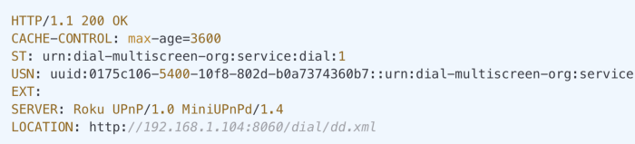

SSDPClient.jl
Simple Service Discovery Protocol (SSDP) client for julia.

Contents
ssdpquery(matchtext=""; timeoutsecs = 10 * 60)
Query local network for devices responding to query with the
Simple Service Discovery Protocol (SSDP).
The `matchtext` argument is an optional text to match, such as "Roku" or "Arduino".
The matching is case-insensitive.
The optional `timeoutsecs` is the number of seconds to monitor the network
before returning from the function. This defaults to 600 seconds or 10 minutes.
If you specify a capture in the match text, that capture will be returned,
otherwise the entry that had a match will be returned in its entirety.
NOTE: If you do not specify an argument all replies will be printed and
the function will loop until timeout (default 10 minutes) or until Control-C
interrupt. This is useful when searching a network.Installation
You may install the package from Github in the usual way, or to install the current master copy:
using Pkg
Pkg.add("http://github.com/wherrera10/SSDPClient.jl")